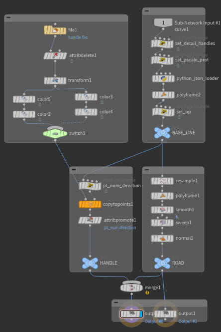

Python
-
https://www.sidefx.com/docs/houdini/hom/commandline.html#hython
-
A Pipeline in Thirteen Lines of Python | Sean Lewkiw | Lost Boys school of VFX | Montreal
-
환경변수 확인
- Help > About Houdini > Show Details
-
vscode
- Edit > Preferences > Set External Text Editor
- https://pakreht.com/houdini/configure-vscode-for-python/
- https://code.visualstudio.com/docs/python/settings-reference
- python.pythonPath - 하지만 지금은 Deprecated(더 이상 추천되지 않음) 상태입니다.
- python.defaultInterpreterPath **최근(2021년 이후)**에 도입된 설정입니다.
- "python.analysis.extraPaths" 비표준 위치에 설치된 패키지에 대해 IntelliSense를 활성화하려면 해당 위치를 파일 python.analysis.extraPaths의 컬렉션 에 추가하세요
- python.analysis.stubPath
- pylance
- https://marketplace.visualstudio.com/items?itemName=ms-python.vscode-pylance
- python.analysis.typeCheckingMode
- off: No type checking analysis is conducted; unresolved imports/variables diagnostics are produced.
- basic: All rules from off + basic type checking rules.
- standard: All rules from basic + standard type checking rules.
- strict: All rules from standard + strict type checking rules.
- python.analysis.typeCheckingMode
- https://marketplace.visualstudio.com/items?itemName=ms-python.vscode-pylance
-
편집: HDA 우클릭 > Edit Extra Sections Source Code > ViewerStateModule > Accept 버튼
# New Pane Tab Type > Python Shell
# ref: https://pakreht.com/houdini/configure-vscode-for-python/
# .vscode/setting.json
import sys
import pathlib
import json
pythonexe_path = pathlib.Path(sys.prefix).resolve().joinpath('python.exe')
sys_paths = [pathlib.Path(p).resolve() for p in sys.path]
vscode_settings = {}
vscode_settings["python.defaultInterpreterPath"] = pythonexe_path.as_posix()
vscode_settings["python.analysis.extraPaths"] = [p.as_posix() for p in sys_paths]
vscode_settings["python.analysis.stubPath"] = 'D:/REPLACE/WITH/YOUR/STUB/PATH'
print(json.dumps(vscode_settings, indent=4))
Windows > Hscript Textport(Alt + Shift + T)
/ -> help otedit
otedit
REPLACED BY
- hou.ui.openTypePropertiesDialog()
## hython path
Linux: /opt/hfs19.0.657/bin/hython
Windows: C:\Program Files\Side Effects Software\Houdini 19.0.657\bin\hython3.7.exe
// setting.json
"python.autoComplete.extraPaths" : [
"C:/Program Files/Side Effects Software/Houdini 19.0.531/houdini/python3.7libs"
],
"python.autoComplete.preloadModules" : [
"hou"
],
"python.analysis.extraPaths" : [
"C:/Program Files/Side Effects Software/Houdini 19.0.531/houdini/python3.7libs"
]
- New Shelf...
- New Tool...
- Script
- New Tool...
import hou
obj = hou.node('/obj')
myGeo = obj.createNode('geo', 'myGeo')
box = myGeo.createNode('box', 'myBox')
# print(box.ascode())
box.parm('sizex').set(10)
selected = hou.selectedNodes() # tuple
selected[0].setInput(0, selected[1], 0)
import Pyside2 as ps
hou.playbar.play() hou.playbar.stop()
hou.ui.displayMessage("HelloWorld") hou.ui.displayMessage("HelloWorld", buttons=("OK", "NO")) hou.ui.readInput("Read Input")
hou.frame() hou.fps()
hou.selectedNodes()
hou.putenv("ENV_A", "VALUE_A") hou.unsetenv('A') hou.getenv("HIP") hou.hda.reloadAllFiles()
hou.hscript("opparm /obj/geo1 scale 10")
n = hou.node("/obj/geo1") sphere = n.node("sphere1")
node.parent() node.children() node.outputs() node.inputs() node.setInput(2, otherNode) node.setInput(2, None) node.color() node.setColor(hou.Color(1, 0, 0)) node.setDisplayFlag(False) node.isGenericFlagSet(hou.nodeFlag.Display) node.setGenericFlagSet(hou.nodeFlag.Display, True) // https://www.sidefx.com/docs/houdini/hom/hou/nodeFlag.html
node.type() node.createNode('attribwrangle')
node.userDataDict() node.clearUserDataDict() node.setUserData('keyString', 'valueString') node.userData('keyString') node.destroyUserData('keyString')
https://www.sidefx.com/docs/houdini/hom/hou/OpNode.html#user-data node.cachedUserDataDict() node.setCachedUserData('keyString', 'valueString') node.cachedUserData('keyString') node.destroyCachedUserData('keyString')
node.asCode()
node.name() node.setName('test') node.commnet() node.setComment('comment') node.appendComment('append comment') node.path() node.position() node.setPosition((0, 0)) // input : vector node.move((-1, -1)) node.destroy() node.evalParm('proj')
// https://www.sidefx.com/docs/houdini/ref/env.html
// https://www.sidefx.com/docs/houdini/hom/locations.html#startup
HH : The path to Houdini supporting scripts and files inside $HFS. Usually $HFS/houdini
HOUDINI_PATH : The path of directories where Houdini looks for configuration files.
HOUDINI_USER_PREF_DIR : The directory to store user preference files.
hou.parm ("/obj/geo1/tx") hou.parm ("/obj/geo1/scale") hou.parmTuple("/obj/geo1/t") p = hou.parm ("/obj/geo1/scale") p.eval() p.evalAsString() p.isTimeDependent() p.evalAtFrame(10) p.set(5) p.name() p.node() p.pressButton() p.keyframes() p.keyframesAfter(20) p.deleteAllKeyframes() p.revertToDefault() p.expression() p.expressionLanguage() p.setExpression('print "Hello"', language=hou.exprLanguage.Python)
node = hou.pwd() geo = node.geometry() geo.points() pt = geo.iterPoints()[0] pt.prims() pt.vertices() geo.attribValue('foo') geo.setGlobalAttribValue('foo', 5) pt.attribValue('foo') pt.setAttribValue('foo', 5) geo.addAttrib(hou.attribType.Prim, 'myattrib', 0.0, create_local_variable=False)
pts = geo.createPoints([(0, 0, 0)]) geo.deletePoints(pts)
group = geo.findPointGroup('grp1') group = geo.createPointGroup('grp1') group.clear() group.destroy()
p = geo.prim(0) p.intrinsicValue('typename')
hou.ui.displayMessage("HelloWorld", serverity=hou.serverityType.ImportantMessage, help='help message', detail='detail','title='title') hou.ui.readMultiInput('wtf', ('1', '2', '3')) hou.ui.selectFile() hou.ui.selectFromList(('1', '2', '3')) hou.ui.selectFromTree(('a/1', 'a/2', '3')) hou.ui.selectNode() hou.ui.selectParm() hou.ui.selectParmTuple() hou.ui.selectAttrib() hou.ui.selectColor() hou.ui.setStatusMessage('hello world')
import hou n = hou.node('/obj/hello') t = n.type() d = t.definition() group = d.parmTemplateGroup() group = hou.ParmTemplateGroup() n.setParmTemplateGroup() d.setParmTemplateGroup()
import hou
n = hou.node('/obj/geo1/transform1')
new_n = n.parent().createNode(n.type().name(), f"{n.name()}_refcopy")
new_n.setPosition(n.position())
new_n.move((0.5, -0.5))
new_n.setColor(hou.color((0.1, 0.1, 0.1)))
group = new_n.parmTemplateGroup()
source = hou.StringParmTemplate('ref_source', 'Reference Source', 1, string_type=hou.stringParmType.NodeRefernece, help='help text')
group.insertBefore((0, ), source)
new_n.setParmTemplateGroup(group)
new_n.parm('ref_source').set(n.path())
temp_list = [
hou.parm('obj/geo1/transform1_refcopy/scale'),
hou.parm('obj/geo1/transform1_refcopy/group'),
hou.parm('obj/geo1/transform1_refcopy/shear')
]
for p in temp_list:
if p.name() == 'ref_source':
continue
if p.parmTemplate().type() == hou.parmTemplateType.Folder:
continue
if p.parmTemplate().type() == hou.parmTemplateType.FolderSet:
continue
mode = kwargs['ctrlclick']
if mode:
expr = 'ch'
if p.parmTemplate().type() == hou.parmTemplateType.String:
expr = 'chs'
p.setExpression(f"{expr}(chs('ref_resource') + '/{p.name()}')")
else:
p.setExpression(f"hou.node(hou.pwd().evalParm('ref_source')).evalParm('{p.name()}')", language=exprLangauge.Python)
PythonModule def onInputChanged OnInputChanged kwargs['node'].hm().onInputChanged(kwargs) # hm - a shortcut for self.hdaModule().
hou.phm().SomeFunction() # hou.phm() == hou.pwd().hdaModule() https://www.sidefx.com/docs/houdini/hom/hou/phm.html https://www.sidefx.com/docs/houdini/hom/hou/HDAModule.html
HOM
- HOM - Houdini Object Model
- 이벤트 https://www.sidefx.com/docs/houdini/hom/state_events.html
- 컨텍스트 메뉴: https://www.sidefx.com/docs/houdini/hom/state_menus.html
- Drawable: https://www.sidefx.com/docs/houdini/hom/state_guides.html
- 핸들: https://www.sidefx.com/docs/houdini/hom/state_handles.html
- 파라미터: https://www.sidefx.com/docs/houdini/hom/state_parameters.html
- HUD: https://www.sidefx.com/docs/houdini/hom/hud_info.html
- Drag & Drop: https://www.sidefx.com/docs/houdini/hom/state_dragdrop.html
- Undo : https://www.sidefx.com/docs/houdini/hom/state_undo.html
Tool scripts https://www.sidefx.com/docs/houdini/hom/tool_script.html
x
- https://www.sidefx.com/tutorials/houdini-cable-tool-with-python-viewer-states/
- Writing custom viewer states in Python
- 상태등록
- Houdini는 시작 시 createViewerStateTemplate상태 템플릿에 접근하여 등록을 수행합니다.
- viewerstate.utilsHoudini는 뷰어 상태 설치를 지원하고 사용자가 직접 상태를 구현할 수 있도록 다양한 문서화된 유틸리티 함수와 클래스를 포함하는 Python 모듈을 제공합니다.
- 이 모듈은 $HHP/viewerstate폴더 아래에 있습니다.
class MyState(object):
# 생성자는 필수
def __init__(self, state_name, scene_viewer):
self.state_name = state_name
self.scene_viewer = scene_viewer
# Event Handler
#
## Life Cycle
#
# onEnter
# onInterrupt
# onExit
# onResume
# onGenerate
#
## UI
#
# onMouseEvent
# onMouseDoubleClickEvent
# onMouseWheelEvent
#
# onKeyEvent
# onKeyTransitEvent
#
# onMenuAction
# onMenuPreOpen
#
# onParmChangeEvent
# onPlaybackChangeEvent
# onCommand
#
## Handle
#
# onHandleToState
# onStateToHandle
# onBeginHandleToState
# onEndHandleToState
#
## Selection
#
# onStartSelection
# onSelection
# onStopSelection
# onLocateSelection
#
## Drawing
#
# onDraw
# onDrawInterrupt
#
## Drag & Drop
#
# onDragTest
# onDropGetOptions
# onDropAccept
#
def createViewerStateTemplate():
state_typename = kwargs["type"].definition().sections()["DefaultState"].contents() # Edit Operator Type Properties > Node > Default State
state_label = "Label"
state_cat = hou.sopNodeTypeCategory()
template = hou.ViewerStateTemplate(state_typename, state_label, state_cat)
template.bindFactory(MyState)
template.bindIcon(kwargs["type"].icon())
return template
- 스크립팅 : Edit Operator Type Properties > Interactive > State Script > New...
- 디버그창 : New Pane Tab Type > Inspectors > Viewer State Browser
- 디버그
- scene_viewer.setPromptMessage # 말 그대로 씬 뷰어 https://www.sidefx.com/docs/houdini/hom/hou/SceneViewer.html
- self.log # => Viewer State Browser
- print() # => 메시지창
ui_event = kwargs["ui_event"] https://www.sidefx.com/docs/houdini/hom/hou/UIEvent.html ui_event = kwargs["ui_event"] reason = ui_event.reason() # https://www.sidefx.com/docs/houdini/hom/hou/uiEventReason.html dev = ui_event.device() # https://www.sidefx.com/docs/houdini/hom/hou/UIEventDevice.html self.log("Mouse:", dev.mouseX(), dev.mouseY(), dev.isLeftButton())
geometry = self._node.geometry(0) https://www.sidefx.com/docs/houdini/hom/hou/Geometry.html intersected = geometry.intersect(origin, direction, position, normal, uvw)
state_parms = kwargs["state_parms"] 바인딩된 파라미터 https://www.sidefx.com/docs/houdini/hom/state_parameters.html#binding-the-parameter
패키지 파일을 이용한 환경 변수 설정
$HOUDINI_USER_PREF_DIR/packages/PythonStateCourse.json를 사용하여 PYSTATECOURSE 환경변수 정의
// https://www.sidefx.com/docs/houdini/ref/plugins.html
{
"path": "$PYSTATECOURSE",
"load_package_once": true,
"env": [
{
"PYSTATECOURSE": "C:/Users/pyoung/Downloads/GumroadPythonStatesforHoudiniTDs/course"
}
]
}
PYSTATECOURSE환경 변수에 정의된 경로를 이용하여 viewer_states 등록 C:/Users/pyoung/Downloads/GumroadPythonStatesforHoudiniTDs/course/viewer_states/nodelsss_state_example.py - viewer_states폴더 (이름 주의)
import hou
import viewerstate.utils as su
class State(object):
def __init__(self, state_name, scene_viewer):
self.state_name = state_name
self.scene_viewer = scene_viewer
def createViewerStateTemplate():
""" Mandatory entry point to create and return the viewer state
template to register. """
state_typename = "course::nodeless_state_example::1.0"
state_label = "1 Course - Nodeless State Example"
state_cat = hou.objNodeTypeCategory()
template = hou.ViewerStateTemplate(state_typename, state_label, state_cat)
template.bindFactory(State)
template.bindIcon("MISC_python")
return template
- 디버그창 : New Pane Tab Type > Inspectors > Viewer State Browser
- 1 Course - Nodeless State Example 우클릭 Enter버튼
-
툴바
- 파라미터에서 Show Parm In > Main & Tool Dialogs + ToolBox로 노출 가능
- 아니면 python코드에서 template.bindParameter(...) 사용해서 노출가능
-
Python은 Compile Block에서 사용할 수 없어 Invoke노드에서 호출이 안됨
- Network View Display Options > Context Specific Badge > Non-compilable SOP Badge > Normal (기본값 Hide)
- Invoke Compiled Block
- Compile Block: 여기는 Compile Block의 End부분이 들어가야함
- Input Name: 여기는 Compile Block의 Begin부분에서 Input Name과 맞춰주면 됨
- Compile Block
- Input Name:
도로의 크기&회전 조절
Edit Operator Type Properties > Parameters
- p_shift Integer
- p_json String
- p_reset Button
# 버튼 > Callback script
# hou.pwd().hm().reset(kwargs)
# Edit Operator Type Properties > Scripts - Event Handler가 Python Module인거 확인
import json
def reset(kwargs):
node = kwargs["node"]
npoints = 0
geo = node.geometry()
if geo:
npoints = geo.attribValue("handles")
json_list = [{"banking": 0, "scale": 0} for _ in range(npoints)]
json_parm = node.parm("p_json")
json_parm.set(json.dumps(json_list))
# Edit Operator Type Properties > Interactive > State Script > New...
import hou
import json
from typing import TypedDict
class Item(TypedDict):
scale: float
banking: float
class Util:
@staticmethod
def clamp(x: int, min_val: int, max_val: int) -> int:
return max(min_val, min(x, max_val))
class State(object):
MSG = "Click and drag to rotate, hold shift to scale"
def __init__(self, state_name, scene_viewer):
self._state_name = state_name
self._scene_viewer = scene_viewer
self._node = None
self._p_shift: int = 0
self._p_json: str = ''
self._json_list: list[Item] = [] # [{"banking": 0, "scale": 0}, ...]
self._selected_pt_num: int = -1
self._mouse_x_start: int = 0
self._offset_sign: int = 1
def onEnter(self, kwargs):
self._node = kwargs["node"]
self._p_shift = self._node.parm("p_shift") # hda 파라미터 이름
self._p_json = self._node.parm("p_json") # hda 파라미터 이름
self._scene_viewer.setPromptMessage(State.MSG)
geo = self._node.geometry(0)
npoints = 0
if geo:
npoints = geo.attribValue("handles")
json_str = self._p_json.eval()
if not json_str:
self._json_list = self._resize([], npoints)
return
loaded = json.loads(json_str)
self._json_list = self._resize(loaded, npoints)
def _resize(self, lst: list, cnt: int) -> list:
diff: int = len(lst) - cnt
if diff < 0:
return lst + [Item(scale= 1, banking= 0) for _ in range(abs(diff))]
elif diff > 0:
return lst[:cnt]
else:
return lst
def onMouseEvent(self, kwargs):
ui_event = kwargs["ui_event"]
reason = ui_event.reason()
dev = ui_event.device()
# self.log("Mouse:", dev.mouseX(), dev.mouseY(), dev.isLeftButton())
if reason == hou.uiEventReason.Start:
self._mouse_x_start = dev.mouseX()
geo = self._node.geometry(0)
origin, direction = ui_event.ray()
position = hou.Vector3()
normal = hou.Vector3()
uvw = hou.Vector3()
intersected = geo.intersect(origin, direction, position, normal, uvw)
if intersected == -1:
self._selected_pt_num = -1
return False
prim = geo.prim(intersected)
self._selected_pt_num = prim.attribValue("pt_num")
normal = prim.floatListAttribValue("direction")
normal = hou.Vector3(normal)
angle = direction.angleTo(normal)
if angle < 90:
self._offset_sign = 1
else:
self._offset_sign = -1
return False
if reason == hou.uiEventReason.Active:
if self._selected_pt_num == -1:
return False
x_offset = dev.mouseX() - self._mouse_x_start
self._mouse_x_start = dev.mouseX()
pt_dict: Item = self._json_list[self._selected_pt_num]
if self._is_shift():
next_scale = pt_dict["scale"] + x_offset
pt_dict["scale"] = Util.clamp(next_scale, -800, 5000)
else:
next_banking = pt_dict["banking"] + (self._offset_sign * x_offset)
pt_dict["banking"] = next_banking
# self._json_list[self._selected_pt_num] = pt_dict
json_str = json.dumps(self._json_list)
self._p_json.set(json_str)
# Must return True to consume the event
return False
def onKeyTransitEvent(self, kwargs):
ui_event = kwargs["ui_event"]
if ui_event.device().isShiftKey():
self._p_shift.set(1)
else:
self._p_shift.set(0)
# Must returns True to consume the event
return False
def _is_shift(self) -> bool:
return self._p_shift.evalAsInt() == 1
def createViewerStateTemplate():
state_typename = kwargs["type"].definition().sections()["DefaultState"].contents()
state_label = "P3tpr subnet1"
state_cat = hou.sopNodeTypeCategory()
template = hou.ViewerStateTemplate(state_typename, state_label, state_cat)
template.bindFactory(State)
template.bindIcon(kwargs["type"].icon())
return template
## dataclass도 고려해봤지만, 이건 내장 json로더가 손이 간다.
## Interactive쪽에만 코드를 짜면 dataclass를 어찌 집어넣을 수 있겠지만, python노드에서 로더부분을 건드리면 비용이 배가 될것이다.
## import dataclasses
##
## class JSON(json.JSONEncoder):
## def default(self, o):
## if dataclasses.is_dataclass(o):
## return dataclasses.asdict(o)
## return super().default(o)
##
## @staticmethod
## def to_str(o: object) -> str:
## return json.dumps(o, cls=JSON)
##
## @dataclasses.dataclass
## class Item:
## scale: float
## banking: float
##
## def load_items(json_str: str) -> list[Item]:
## data = json.loads(json_str)
## return [Item(**item) for item in data]
노드

- detail wrangle
- i@handles = npoints(0);
- Point Wrangle
- f@pscale = 1;
- @prot = 0;
- python
# 커브 인풋에서 Python 노드 추가
# - Edit Parameter Interface - json_in String 넣기
# 추가한 json_in텍스트에 `chs("../p_json")` 넣기
# - 그러면 hou.evalParm("./json_in") 로 불러오기 가능
# - 아니면 곧 바로 hou.evalParm("../p_json")
import json
node = hou.pwd()
geo = node.geometry()
json_str = hou.evalParm("./json_in")
json_list = []
if json_str:
json_list = json.loads(json_str)
for point in geo.points():
pt_num = point.number()
try:
pt_dict = json_list[pt_num]
except:
break
pscale = pt_dict["scale"]
pscale = (pscale + 1000) / 1000
prot = pt_dict["banking"] / 1000
point.setAttribValue("pscale", float(pscale))
point.setAttribValue("prot", float(prot))
- Poly Frame
- Tangent : N
- point wrangle
vector up = set(0,1,0); float angle = f@prot; matrix rot = ident(); vector axis = @N; rotate(rot, angle , normalize(axis)); vector rotateP = up * rot; @up = rotateP;
여기까지가 BASE_LINE
- point Wrangle
i@pt_num = @ptnum; v@direction = @N; - Copy To Point
- Attribute Promote
- pt_num, direction:point => primitive
:TODO Jeroen Denayer는 여기서 한발 더 나갔다
- scale
- scale_left
- scale_right
- bank
activeHandle
activeHandleParms_hide
curve_pos
handle_type
basic/
basic__rotation
basic_road_width
basic_road_width_hide
delete/
delete__length
rail/
rail__length
def getAllHandleTypeParms():
main_floder = ptg.find("f_activeHandleParms")
pts = main_floder.parmTemplates()
parms = []
for pt in pts:
if pt.type() != hou.parmTemplateType.Folder:
parms.append(pt.name())
else:
pt_folder = pt
for pt in pt_folder.parmTemplates():
if "_hide" not in pt.name():
parms.append(pt.name())
return parms
parms = getAllHandleTypeParms()
node.parm("allHandParms").set(json.dumps(parms))
###
def updateActiveHandleParm(kwargs):
node = kwargs["node"]
phm = node.hdaModule()
jsp = node.parm("allHandlesJson")
jsl = json.loads(jsp.eval())
index = kwargs["script_value"]
handle_dict = jsl[index]
###
for parm_name in handle_dict:
value = handle_dict[parm_name]
node.parm(parm_name).set(value)
visible_parms.append(parm_name)
###
def updateActiveHandleParm(kwargs, re_draw_ui = False):
# Update the json when an active handle parameter changes value.
node, parm_name = kwargs['node'], kwargs['parm_name']
phm = node.hdaModule()
jsp, jsl, ahps, ah = phm.getParmsAndValues(node)
value = node.parm(parm_name).eval()
jsl[ah][name] = value
jsp.set(json.dumps(jsl))
###
레고 블록 쌓기
상태
# ref - [Python States | Paul Ambrosiussen | Games Workshop](https://www.youtube.com/watch?v=H2_38R-V9Gw)
# - blocks Multiparam Block(list)
# - pos_# float3
# - rot_# int
# - hue_# float
# - variant_# int
# self._gi = su.GeometryIntersector(hou.Geometry(), scene_viewer=self.scene_viewer)
# self._gi.geometry = self._collision_node.geometry().freeze()
# ui_event = kwargs["ui_event"]
# origin, direction = ui_event.ray()
# self._gi.intersect(origin, direction)
import hou
import viewerstate.utils as su
class State(object):
def __init__(self, state_name, scene_viewer):
self.state_name = state_name
self.scene_viewer = scene_viewer
self._node = None # onEnter에서 할당. hda노드
self._collision_node = None # onEnter에서 할당. BLOCK_COLLISION는 요철(Stud) 부분이 없는 NULL노드
self._active_block_type = 0 # 0은 4x2블럭, 1은 2x2블럭
self._active_hue = 0
self._active_rot = 0
self._gi = su.GeometryIntersector(hou.Geometry(), scene_viewer=self.scene_viewer)
def onEnter(self,kwargs):
self._node = kwargs["node"]
self._collision_node = self._node.node("BLOCK_COLLISION") # BLOCK_COLLISION는 요철(Stud) 부분이 없는 NULL노드
self.UpdateCollisionGeo()
if self.GetMultiParmEntries() == 0:
self.AddMultiParmEntry()
######################
def GetMultiParmEntries(self) -> int:
return self._node.parm("blocks").evalAsInt()
def AddMultiParmEntry(self):
next_multiparm_entry = self.GetMultiParmEntries() + 1
self._node.parm("blocks").set(next_multiparm_entry)
self._node.parm(f"variant_{next_multiparm_entry}").set(self._active_block_type)
self._node.parm(f"hue_{next_multiparm_entry}").set(self._active_hue)
self._node.parm(f"rot_{next_multiparm_entry}").set(self._active_rot)
def UpdateCollisionGeo(self):
self._gi.geometry = self._collision_node.geometry().freeze()
######################
def onMouseEvent(self, kwargs):
ui_event = kwargs["ui_event"]
origin, direction = ui_event.ray()
self._gi.intersect(origin, direction)
if self._gi.prim_num == -1:
return False
# 클릭한 순간 추가
if ui_event.reason() == hou.uiEventReason.Picked:
if ui_event.device().isLeftButton():
self.AddMultiParmEntry()
self.UpdateCollisionGeo()
# 마우스 건드리면 항상 미리보기 위치 변경
multiparm_entry = self.GetMultiParmEntries()
intersected_position = hou.Vector3(round(self._gi.position.x()), round(self._gi.position.y()), round(self._gi.position.z()))
self._node.parmTuple(f"pos_{multiparm_entry}").set(intersected_position)
# Must return True to consume the event
return True
def onMouseWheelEvent(self, kwargs):
# 휠 돌리면 Shift 누르면 HUE 변경
# 휠 돌리면 Shift안누르면 90도 회전
ui_event = kwargs["ui_event"]
state_parms = kwargs["state_parms"]
device = ui_event.device()
scroll = device.mouseWheel()
multiparm_entry = self.GetMultiParmEntries()
if device.isShiftKey():
new_value = self._node.parm(f"hue_{multiparm_entry}").evalAsFloat() + scroll / 100
self._node.parm(f"hue_{multiparm_entry}").set(new_value)
self._active_hue = new_value
else:
new_value = self._node.parm(f"rot_{multiparm_entry}").evalAsInt() + int(scroll * 90)
self._node.parm(f"rot_{multiparm_entry}").set(new_value)
self._active_rot = new_value
# Must return True to consume the event
return False
def onMenuAction(self, kwargs):
# 아레 context menu에서 넘어옴
menu_item = kwargs["menu_item"]
if menu_item == 'blocktype':
active_block_type = int(kwargs["blocktype"])
multiparm_entry = self.GetMultiParmEntries()
self._node.parm(f"variant_{multiparm_entry}").set(active_block_type)
self._active_block_type = active_block_type
def createViewerStateTemplate():
state_typename = kwargs["type"].definition().sections()["DefaultState"].contents()
state_label = "9 Course - Block Placer"
state_cat = hou.sopNodeTypeCategory()
template = hou.ViewerStateTemplate(state_typename, state_label, state_cat)
template.bindFactory(State)
template.bindIcon(kwargs["type"].icon())
# 우클릭 context menu 정의
# https://www.sidefx.com/docs/houdini/hom/hou/ViewerStateMenu.html
context_menu = hou.ViewerStateMenu('menu', 'Example')
context_menu.addRadioStrip("blocktype", "Block Type", "0")
context_menu.addRadioStripItem("blocktype", "0", "8 Pin")
context_menu.addRadioStripItem("blocktype", "1", "4 Pin")
template.bindMenu(context_menu)
return template
- Point Generate
- blocks 수 만큼
- Point Wrangle
string iteration = itoa(@ptnum + 1); vector pos = chv("../pos_" + iteration); float rot = radians(chi("../rot_" + iteration)); float hue = chf("../hue_" + iteration); int variant = chi("../variant_" + iteration); v@P = pos; p@rot = eulertoquaternion(set(0, rot, 0), XFORM_XYZ); v@Cd = hsvtorgb(hue, 1, 1); i@variant = variant; - Copy To Point
- Piece Attribute: variant
- Grid랑 머지하고 아웃풋
BLOCK_COLLISION은
- Blast
- Group: knobs 를 날려주고
- Attr Delete / Group Delete로 깔끔하게 해주자
- 그 다음 Null노드로 이름 BLOCK_COLLISION
Qt
- https://www.sidefx.com/docs/houdini/hom/cb/qt.html
- PySide2가 후디니에 내장되어있다. - PySide6로 업글예정
- https://www.sidefx.com/docs/houdini/ref/panes/pythonpanel.html
- https://doc.qt.io/qtforpython-6/
- 공학자를 위한 PySide2